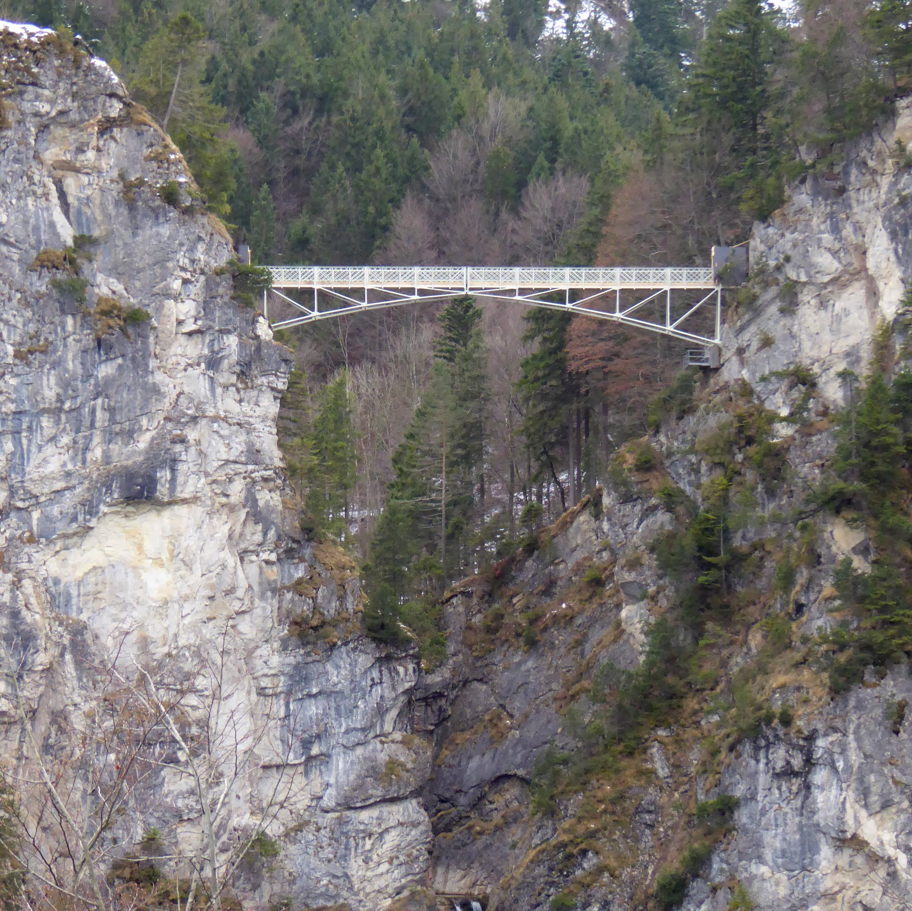
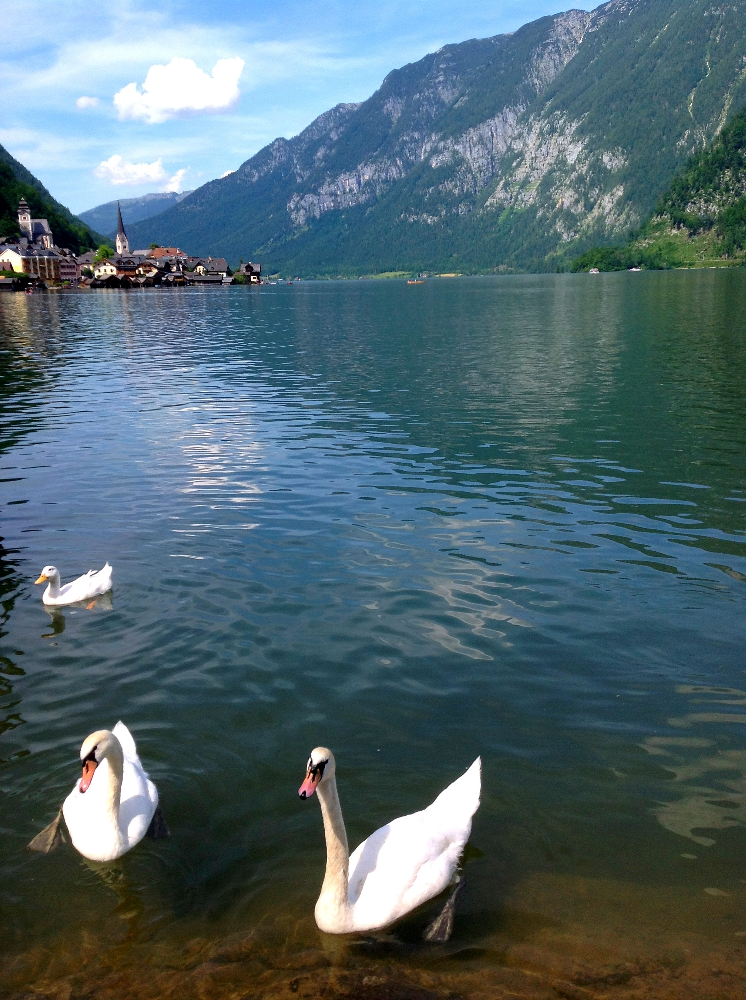
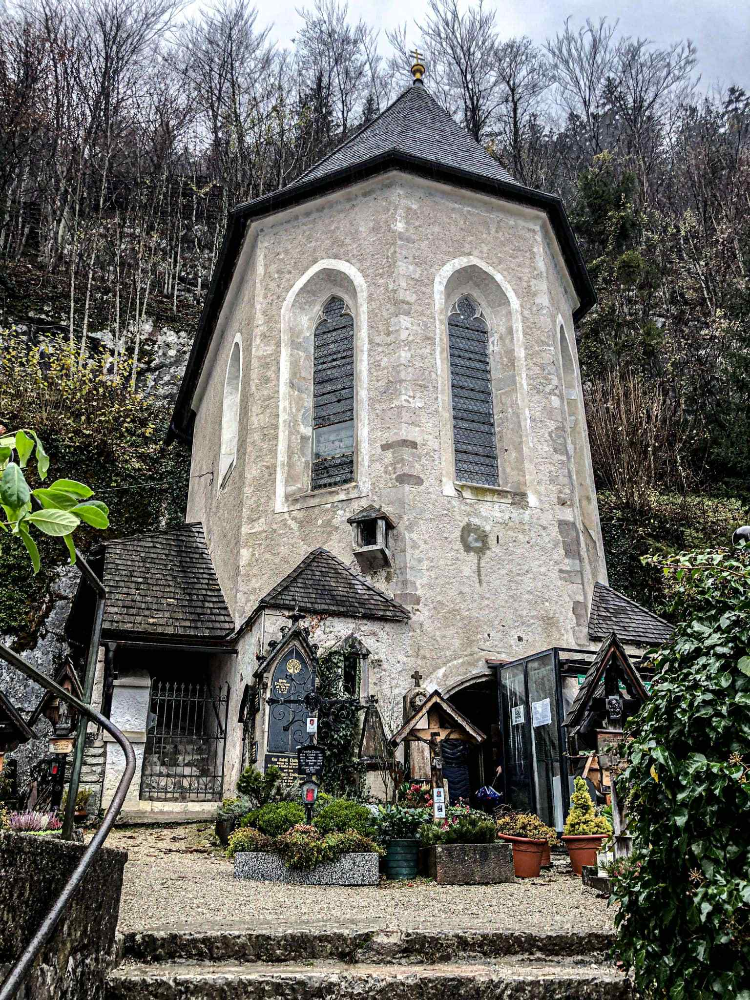

Bavaria & Salzburg
A Family Adventure · Summer 2026
July 11–21, 2026
Family of 4
Munich · Berchtesgaden · Salzburg
IAD ⇄ MUC
| Day | Date | Base | Highlights |
|---|
| 1 | Sat Jul 11 | In flight | Depart IAD — transatlantic overnight to Munich |
| 2 | Sun Jul 12 | Munich | Arrive Munich · Marienplatz & Glockenspiel · Asamkirche · Englischer Garten · Beer garden dinner |
| 3 | Mon Jul 13 | Munich | Mike's Bike Tour with beer garden lunch stop · Englischer Garten afternoon |
| 4 | Tue Jul 14 | Munich | Neuschwanstein Castle day trip · Marienbrücke bridge view · Optional Hohenschwangau |
| 5 | Wed Jul 15 | Munich | Munich Residenz (Treasury + State Rooms) · Tollwood Summer Festival, Olympic Park |
| 6 | Thu Jul 16 | Berchtesgaden | Train from Munich through the Alps · Berchtesgaden Old Town · Gasthof dinner |
| 7 | Fri Jul 17 | Berchtesgaden | Königssee electric boat · St. Bartholomä chapel · Cliff echo & flugelhorn demonstration |
| 8 | Sat Jul 18 | Salzburg | Eagle's Nest (Kehlsteinhaus) · Berchtesgaden salt mine · Bus 840 to Salzburg |
| 9 | Sun Jul 19 | Salzburg | Hohensalzburg Fortress · Getreidegasse · Mirabell Gardens · St. Peter Stiftskeller dinner |
| 10 | Mon Jul 20 | Salzburg | Hallstatt day trip · Lake village · Beinhaus charnel house · Salt mine · Boat crossing |
| 11 | Tue Jul 21 | Homeward | ÖBB Railjet → Munich · S-Bahn to MUC airport · Fly home to DC |
Marienplatz & the Glockenspiel
Munich's central square has been the city's heart since 1158 — the perfect soft landing after an overnight flight. The neo-Gothic Town Hall's Glockenspiel performs at noon and 5pm, with 43 bells and 32 figures re-enacting 16th-century Munich history. Sit at a café terrace, order a coffee, and let the city come to you.
Asamkirche
A five-minute walk south on Sendlinger Strasse, the Asamkirche is one of Munich's great surprises — a private baroque chapel built in the 1730s that packs gilded stucco, frescoed ceilings, and a ceiling-height altar into a space barely eight meters wide. Free to enter and 20 minutes that will stay with you.
Free · Sendlinger Str. 62 · Allow 20 minutes
Viktualienmarkt
Munich's famous outdoor market, steps from Marienplatz, is great for snacks, fresh pretzels, and absorbing the city at street level. Vendors have sold produce, cheese, and flowers here continuously since 1807.
Englischer Garten & Beer Garden Dinner
Bigger than Central Park, Munich's great urban park is where the city exhales. At the Eisbach, local surfers carve turns on a standing river wave year-round within 50 meters of a busy city street. End the day at the Chinesischer Turm beer garden — roast chicken, pretzels, and a proper Bavarian welcome.
Chinesischer Turm · 7,000 seats · Self-service · Cash preferred

Asamkirche interior — baroque masterpiece, Sendlinger Strasse

Rathaus-Glockenspiel, Marienplatz

Eisbach river wave, Englischer Garten · Munich's legendary year-round surfers
Neuschwanstein Castle, Bavaria — the inspiration for Disney's Sleeping Beauty Castle
Getting There
Regional train from Munich Hauptbahnhof to Füssen takes about 2 hours (Bayern-Ticket), then Bus 73 or 78 to the castle base. Depart Munich by 8am to stay ahead of the July crowds — Neuschwanstein is one of Germany's busiest sites and the queues build early.
Bayern-Ticket covers train + regional bus · Depart Munich ~8am
Interior Timed Tour
King Ludwig II began construction in 1869 and never finished — he died in 1886 with only 14 of the planned 200 rooms complete. The Singers' Hall re-creates Wagner's Hall of the Holy Grail at full scale; the throne room reaches 13 meters high, designed for a throne Ludwig never lived to receive. Tours run ~35 minutes.
Book immediately at tickets.hohenschwangau.de — July sells out weeks ahead

View from Marienbrücke — 90 meters above the Pöllat Gorge
Marienbrücke
A 15-minute uphill walk from the castle leads to the iron bridge suspended 90 meters above the Pöllat Gorge — the postcard view: castle rising above pine forest, Alpsee below, Alps behind. Arrive early to avoid the queue for a clear shot.
Optional: Hohenschwangau
The yellow castle at the base is where Ludwig grew up — better preserved, more personal, showing the childhood that shaped his obsessions. Worth adding if the family has energy.
Separate ticket · Same booking platform
The Antiquarium — a 66-meter barrel-vaulted Renaissance hall inside the Munich Residenz, built c. 1568
Munich Residenz
For 500 years the Residenz was the seat of Bavarian dukes, electors, and kings — 130 rooms in the heart of the city, a 10-minute walk from Marienplatz. Start in the Treasury: Wittelsbach crown jewels, medieval reliquaries, a portable 16th-century altar the size of a book. Then the State Rooms, crowned by the Antiquarium — 66 meters of barrel-vaulted hall frescoed top-to-bottom. Allow 2.5–3 hours for both wings.
Opens 9am · ~€10/adult · Max-Joseph-Platz 3
Afternoon Free Time
With the Residenz done by midday, the afternoon is yours before Tollwood. Maximilianstrasse, Viktualienmarkt, or a long lunch in the Old Town — tomorrow you leave for the mountains, so this is the last easy Munich afternoon.
Tollwood Summer Festival
Every July, Olympic Park transforms into one of Munich's great summer events — free entry, with dozens of international food stalls, multiple live music stages, arts installations, and a night market atmosphere that peaks after 7pm. It draws locals as much as tourists and feels genuinely festive rather than commercial. Aim for 7pm and stay as long as energy holds.
Free entry · Olympic Park · U3 to Olympiazentrum · Open until late
"Pack a light jacket and arrive at dusk — the food-stall lights and live music stages come alive as the evening cools."

Olympic Park, Munich · Venue for Tollwood Summer Festival each July
Königssee — mirror reflection at Malerwinkel, Berchtesgaden National Park
Getting There
Bus 841 runs from Berchtesgaden town center to the Königssee dock in about 20 minutes. Take the first morning bus and join the queue for the first boat — July mornings fill quickly, and early arrival means better light on the cliff walls.
Bus 841 · First boats ~8am · Buy round-trip ticket at dock
The Electric Boat & the Cliff Echo
Gasoline engines have been banned on the Königssee since 1909. The all-electric boats run in near-silence between vertical rock walls that drop from 2,700-meter peaks straight into dark green water. Midway across, the captain pauses the boat, raises a flugelhorn, and plays a short phrase toward the cliff. Three seconds later it returns, perfectly preserved. Every time, it silences the whole boat.
Afternoon: Rest Before the Big Day
Return by mid-afternoon. Tomorrow covers the Eagle's Nest, the salt mine, and the transfer to Salzburg — a full day from early morning. An easy evening and an early night is the right call.

St. Bartholomä chapel — the Watzmann east face rises 2,000m directly behind
St. Bartholomä
The onion-domed chapel has stood on its narrow peninsula since the 12th century. Walk around the church, eat lunch at the lakeside restaurant — trout pulled from the lake that morning — and watch the light move across the cliff face before the return boat.
Restaurant serves lake trout · Allow 1–1.5 hrs at the landing

The silent electric fleet — no gasoline engines on the Königssee since 1909
Hallstatt village and shoreline — one of the most photographed places on earth
Getting There — Depart Early
Train and bus from Salzburg takes about 1.5 hours; depart by 8am to arrive ahead of the tour buses that fill the village by 10:30am. The final leg is a short ferry across the lake from Hallstatt Bahnhof — the train station sits on the opposite bank and the ferry runs with every arriving train.
Depart Salzburg ~8am · Ferry from Hallstatt Bahnhof ~€8/pp round-trip
The Village
Hallstatt has about 800 residents and almost no flat ground — wedged between a sheer cliff and the lake, buildings stacked almost vertically above the water. One of the most photographed villages on earth, and the photographs do not overstate it. Walk slowly and find the side lanes before the groups arrive.
Return to Salzburg — Last Evening
Return to Salzburg by late afternoon. An unhurried last evening — stroll the Salzach, dinner in the Linzergasse, an early night. Tomorrow's Railjet departs at 6:23 or 7:11am; the early start is real.
ÖBB Railjet Salzburg → Munich 6:23 or 7:11 · Book seat reservation 3–4 wks ahead
The Beinhaus (Charnel House)
Because the cemetery had nowhere to expand — cliffs one side, lake the other — Hallstatt developed a tradition of exhuming old remains and painting the skulls with names, birth years, and floral designs. Over 1,200 painted skulls are on display in the chapel. Unusual, genuine, and quietly unforgettable. Teenagers consistently remember it.
~€1.50 · Michael's Chapel, Hallstatt churchyard
Salt Mine & Lakeside Lunch
The Hallstatt salt mine has been worked since at least 1000 BC — the oldest in the world, and the site that gave the Iron Age's first phase its name. The guided tour ends with a slide down a wooden miners' chute. Lunch afterward at a lakefront restaurant; order the trout or Zander from the lake.
~€36/adult · Book ahead in July · ~1.5 hrs · Funicular from village center



Left: the Salzkammergut train through the Austrian Alps · Centre: the Hallstätter See · Right: the Beinhaus charnel house